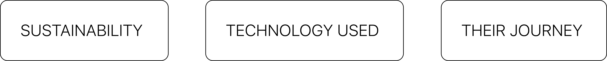
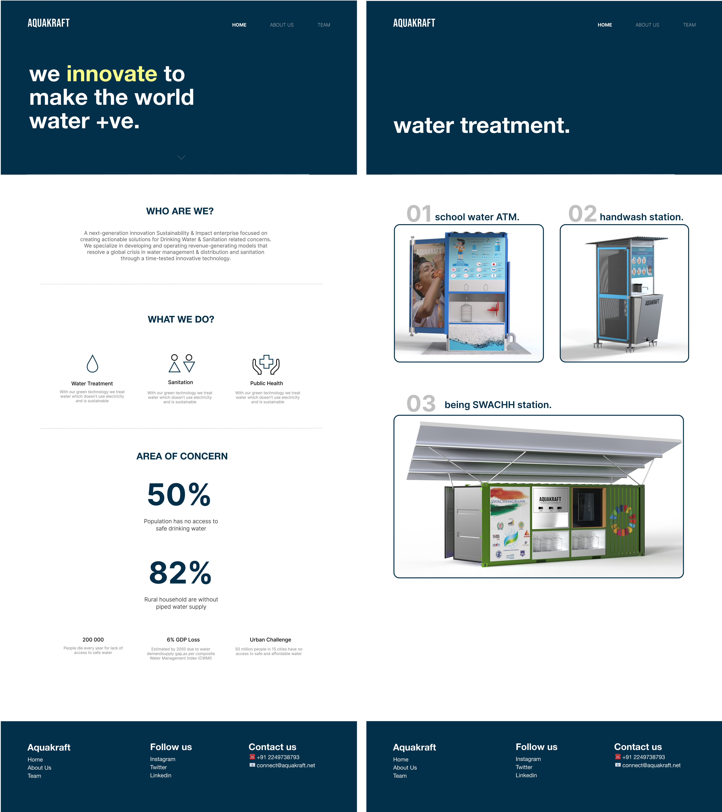
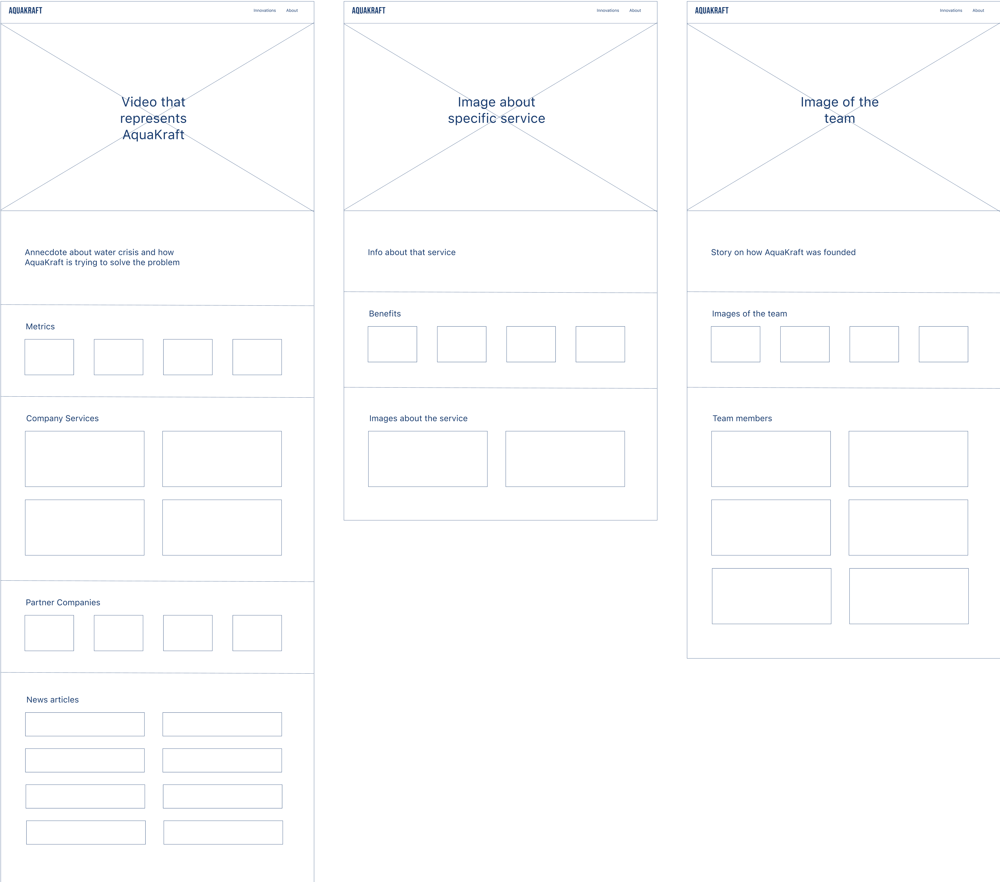
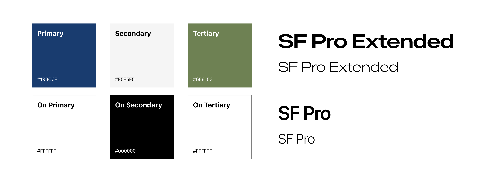
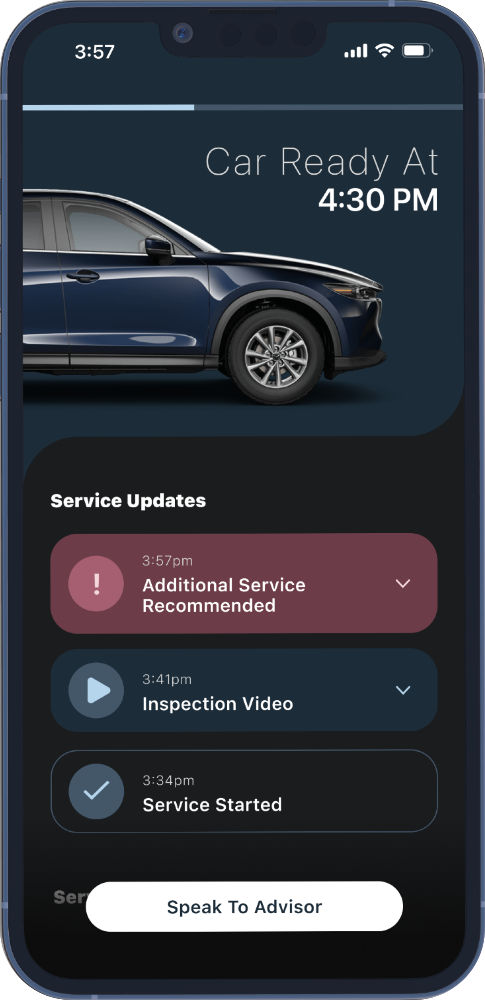
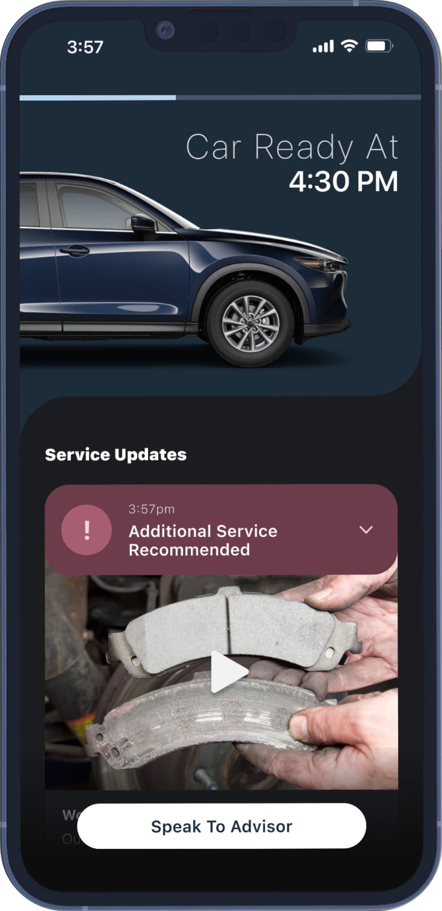
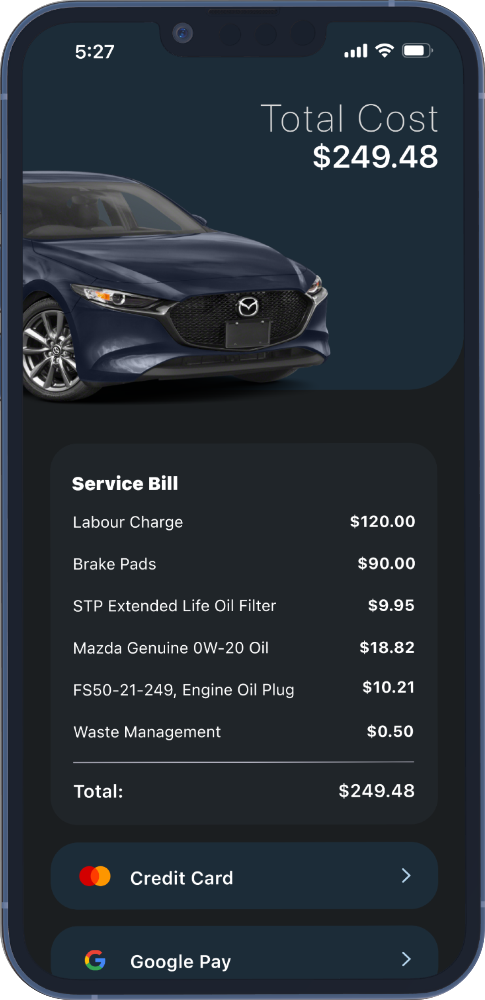
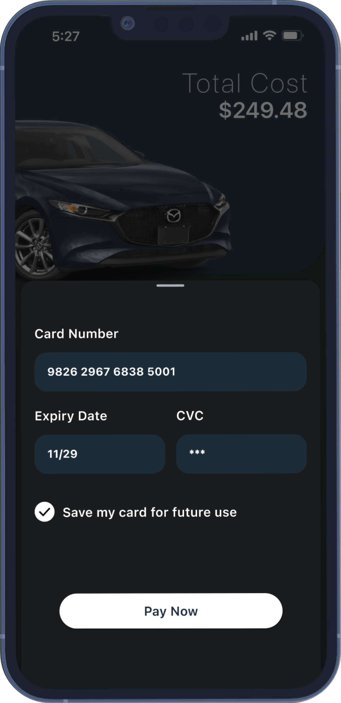
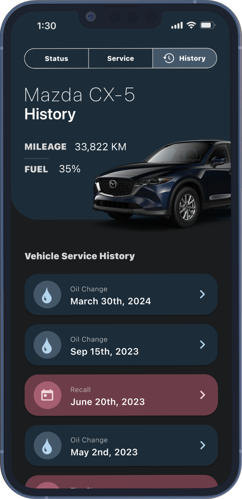
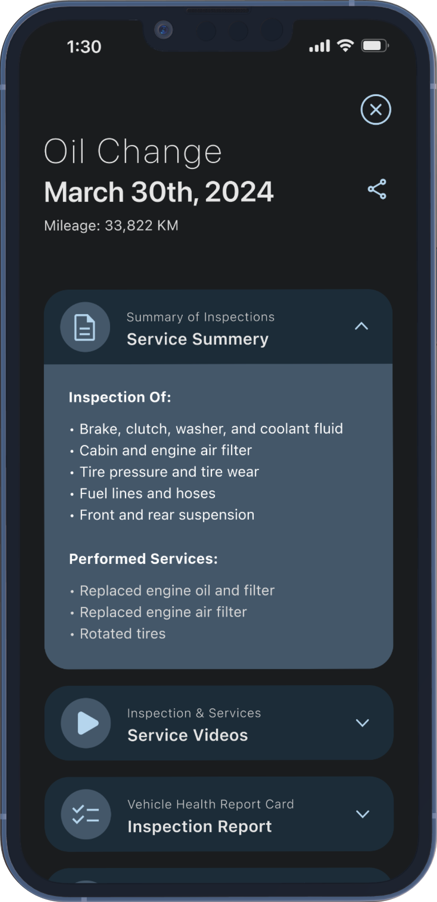

Promoting water positivity with AquaKraft: increased website traffic by 25% with compelling storytelling.
Impact:
EMPOWERED MAZDA OWNERS WITH DECISION-MAKING
ELEVATED BRAND PERCEPTION AND LOYALTY
STREAMLINED SERVICE BOOKING AND PAYYMENTS

Team:
AQUAKRAFT
My Role:
UI DESIGN
UX DESIGN
VIDEO POST PRODUCTION
Duration:
4 WEEKS
Who is AquaKraft?
It is a water sustainability and impact company who are
focussed on creating innovative and energy-efficient solutions for drinking
water and sanitation. They believe in transforming communities by turning barren
lands green and bringing water back to dry taps. They are a part of UN Global
Compact India and aim to reach the UN Sustainable Development Goal of Clean
Water and Sanitation in india before 2030.
What did they want?
They wanted to revamp their existing website, which
lacked an enticing story for potential customers and investors. Apart from
the website, they also wanted me to create a corporate video, a letter head
for their business documents and visiting card templates. Their goal was to
create a visually compelling corporate website that truly highlighted their
achievements. Moreover, some key topics they wanted to highlight all over
the website were-

I started the process with a design review of the existing website


I conducted 5+ usability tests
I was confident in my assumptions but wanted to validate them with real feedback.
So, I reached out to two investors and existing corporate customers in India to gather their thoughts on
the website. Their feedback confirmed my suspicions—they struggled to understand AquaKraft's services and
mission from the current website.
One thing that caught my attention was a comment from a corporate customer. They mentioned that AquaKraft
wins awards and gets featured in articles and videos often, but this isn't clearly shown on the website.
This insight underscores the importance of showcasing such achievements to increase AquaKraft’s and the
website's credibility.
Visual design was my next step


Low-fidelity wireframes helped with information architecture
Low-fidelity wireframes were essential for organizing information
effectively in my design process. Starting with these simplified layouts allowed rapid
iteration and alignment with user needs and business goals early on, ensuring a solid
foundation for the interface design.

Colours + Fonts
For this project, I followed Google Material Design's color scheme
guidelines to create a cohesive and appealing look. I also chose SF Pro Extended as the
main font because my research showed that sans-serif fonts, which offer a modern and
professional feel, are popular on sustainability websites. This combination helped make
AquaKraft's site look both contemporary and credible.

Allowing the Owner to Make Informed Decisions
Every time before the service begins, the mechanic
performs an inspection to check if any additional services are required.
Instead of asking the vehicle owner through third-party applications,
they can send a video of the issue and ask via the app. By giving the
control to the owner to make decisions for their vehicle, we can provide
transparency through updating vehicle status throughout service and
additional evidence through video and facilitate more informed decision making.


Keeping the Owner Within One Touchpoint
By bringing the payment touchpoint inside the app, we
can remove any kind of payment friction to provide a thoughtful end-of-service
experience and strengthen the brand perception with a better experience.


Providing a Detailed Service History
A service history folder is essential for any vehicle owner,
especially when selling the car, and we decided to digitalize it and integrate it
into the MyMazda App. The service history tab includes the service summary, service
videos, inspection reports and the receipt. Additionally, it acts as a touchpoint
for a new owner to onboard the MyMazda application.


What Did I Learn?
1. Importance of Design Research: Throughout the project, I gained valuable experience in conducting thorough design research, delving into user preferences, pain points, and behaviors. This process allowed me to uncover insights that guided our design decisions and ensured that the MyMazda app catered to the specific needs and expectations of Mazda owners.
2. Collaboration: Working collaboratively with the team, I learned the importance of combining diverse perspectives and expertise to create holistic and innovative solutions. Embracing the ideology of adding value to the business, brand, and design, I ensured that our design choices aligned with the overarching goal of enhancing the user experience and increasing customer trust in dealership services.
3. Experience Design Foundation: This project served as a practical application of experience design principles. By focusing on transparency, user-friendliness, and seamless integration of touchpoints, I grasped the fundamental aspects of experience design and how it can positively impact user engagement and satisfaction in digital products like the MyMazda app.